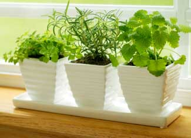

Did you ever want to grow some of your own food but aren't sure how to get started? If you've got access to a spot - even a tiny patch - that gets some sun, it might be easier than you think. Here are tips from a few expert gardeners to help you get started.
Barbara Pleasant, author of The Gardener's Bug Book and The Gardener's Weed Book (both available from Mother Earth Shopping), advises asking yourself these three questions first:
1. What do you have in terms of site?
2. How much time can you spend with your garden each week?
3. What would be most rewarding to grow ? both in terms of satisfaction and saving money?
William Woys Weaver, author of 100 Vegetables and Where They Came From (available from Mother Earth Shopping) and Heirloom Vegetable Gardening, says to consider, in this order, 'your microclimate, your soil type, and your level of commitment (the amount of time you imagine you want to give it). Those three things will be the template for everything else that follows.'
According to Lee Reich, author of Weedless Gardening and the 'Easy Garden' cover story for our forthcoming April/May issue, these are the important things to consider:
1. Location: Put the garden as close to your back door as possible. There's an old saying that 'the best fertilizer is the gardener's shadow' and a garden near your back door invites observation, weeding, harvesting, and ready appreciation of the fun, beauty and good tastes that gardening offers.
2. Sunlight: Light is what fuels plant growth, and some plants need more of it than others. Without sufficient sunlight, plants are weak and more prone to disease. Fortunately, no matter what the light level, there's always something that can be grown within any category of plants. For instance, fruits generally need abundant sunlight, but red currants do fine in quite a bit of shade. Be sure to be realistic when assessing light conditions; 'full sun' means at least six hours or direct summer sun daily.
3. Books and magazines: You can garner an abundance of gardening experience through reading. Reading can tell you what's really going on 'behind the scenes' and helps you avoid many mistakes. No need to re-invent the wheel. The hard part is sifting and winnowing the good stuff from the chaff. My favorite basic books would include Robert Kourik's Designing and Maintaining Your Edible Landscape Naturally and Hugh Johnson's The Principles of Gardening.
Roger Doiron is the founder of Kitchen Gardeners International, a Kellogg Food and Society Policy Fellow, and author of our upcoming feature on harvesting wild dandelions (also in the April/May issue). He offers this guidance: 'Start small and scale up as you encounter success. Start by planting things you like to eat (that will motivate you to do more later). Understand the space requirements of each plant before putting seeds and seedlings in the ground.'
Garden photographer David Cavagnaro, co-author of The Complete Vegetable and Herb Gardener and Heirloom Vegetables, offers the following advice:
1. Gardens are, above all else, SOIL. So study your soils, even do some simple testing, look for the best soils on the property which also have the most full-sun and well-drained exposure.
2. Talk to your neighbors. Find out what their successes and failures have been, what crops and varieties do best in your area.
3. Start small, with the crops you know you like the best and eat the most of, so as not to be overwhelmed, then gradually expand year by year. Remember, a small handful of seeds expands into more work than you might imagine!
William D. Adams, co-author of The Southern Kitchen Garden, has this to say:
1. The garden needs to be located in full sun, if possible. Fruiting crops, such as tomatoes, peppers, beans and squash, demand it. Root crops like radishes are more shade tolerant and leafy vegetables like lettuce will grow with even more shade.
2. Locate the garden where you have good drainage and good soil. Sandy loam is best and easy to work with but if you don't have good soil consider raised beds or container gardening. Even if you have heavy clay, when it is amended with 4 to 6 inches of compost, it becomes a good soil that can be worked up into ridges ? a foot or so high ? with the plants/seeds planted on the ridge for improved drainage.
3. Plant high value crops that you and your family really like. Don't overdo it, though, and check with your local cooperative extension office for a list of recommended varieties.
Sandor Katz takes some of the stress out of learning how to garden in his new book, The Revolution Will Not Be Microwaved (available from wildfermentation.com). Here's his advice for beginners:
Anyone can grow plants. There's lots of information out there, more than you could possibly ever read, more than you would want to, and many of the sources contradict each other. Don't worry! Start however you can, find mentors, and let your experience with the plants be your guide. If you stick with it, each year will bring you greater abundance. Certain foods (fruits and nuts) require years to produce; others (such as radishes) take only a few weeks. Plant what suits your tastes and your circumstances. You can grow plants in a tiny yard, in a plot in a community garden, on the roof or fire escape, or guerilla-style in public spaces. Be creative. With a little luck, you may grow old enjoying fruit from trees and bushes you plant now.
Alma Hetch, owner of Second Nature Design, gives this advice (read more in the upcoming May/June issue of Natural Home magazine):
Ask yourself what you want to do with the space. What gardens have you seen that you like? Go to a local arboretum to see how the space is arranged. Visit your local nursery to see what appeals. Walk around your neighborhood. Look at paths, gates, fences, walls, materials and the plants that are healthy. Start collecting materials - I turned my neighbor's basketball hoop into a vine 'halo.' The next time it rains, go stand outside and see how the runoff moves; observe the drainage. Transform a runoff area into a streambed with a rain garden at the foot. Take lots of photographs. Get ideas from magazines. Clip out articles and photos. Remember to be realistic - don't fight nature. Get dirty. Keep your nose to the ground. Plant an apple tree and grow a Meyer lemon by your kitchen door. Have fun!
And I'll offer this advice from personal experience. Do not start your first garden with 14 different kinds of heirloom tomatoes! You won't even be able to give them away fast enough at harvest time!
In addition to all the great books from our gardening experts, check out the following helpful articles:
|
 ISTOCKPHOTO/CARLY HENNIGAN If you’ve never grown a garden before, it’s a good idea to try growing a few simple herbs in a sunny windowsill before going whole-hog on your back yard. |
|
|